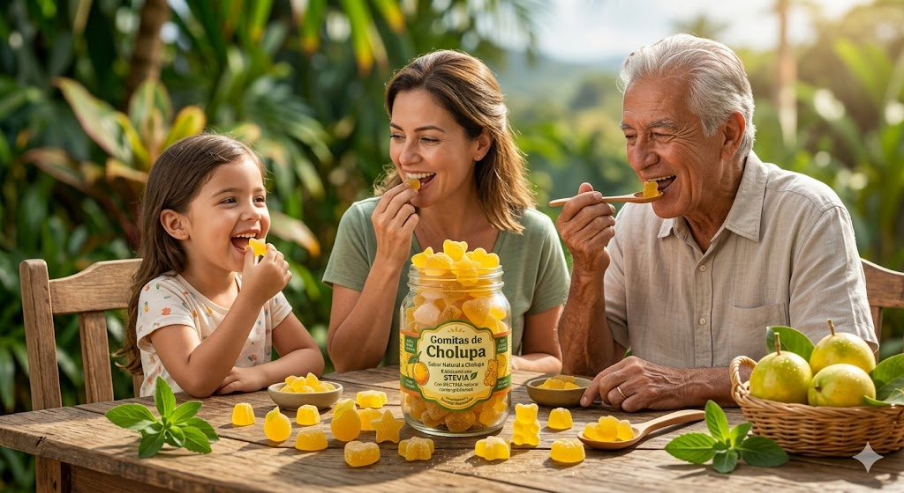

Resumen
Las gomitas son un producto muy popular por su variedad de colores, formas y sabores. Este proyecto buscó el desarrollo de gomitas a base de chulupa, fruta originaria del Huila, orientada a sustituir golosinas tradicionales de alto valor calórico por opciones nutritivas.
Estas gomitas se caracterizan por el uso de pectina como agente gelificante de origen vegetal, y la incorporación de stevia como edulcorante natural apto para consumidores que buscan reducir el consumo de azúcar.
El proceso de preparación comprende etapas críticas tales como: extracción del jugo de la fruta, mezcla controlada con stevia y agente gelificante bajo condiciones de temperatura específicas, moldeado, enfriamiento y desmoldado.
